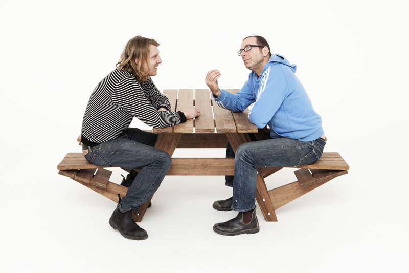
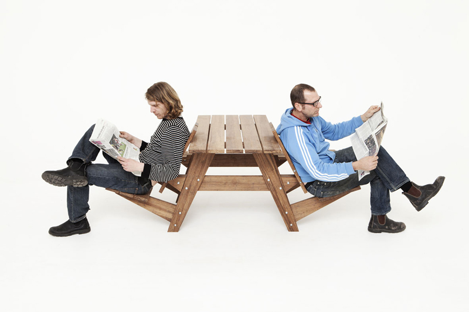
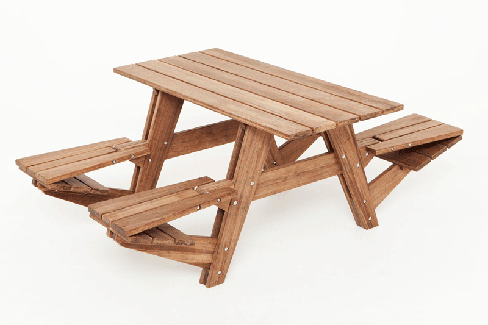

Another Picnic Table
Wouter Nieuwendijk and Jair Straschnow teamed up to challenge the traditional picnic table that provided easier access at the table and with a flip of the seat it converts into a comfortable lounge chair.
Found on The Fox is Black